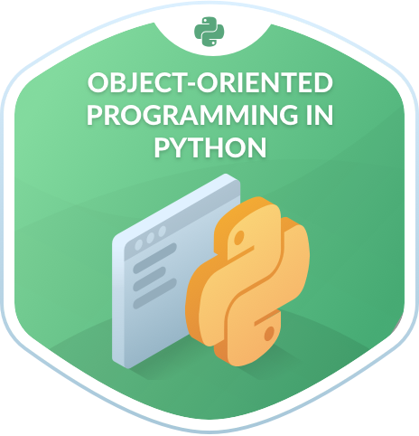

OOP Principles
One of the core principles of object-oriented programming is encapsulation (OOP). It discusses the concept of data wrapping and the methods that operate with data as a single unit. An example of encapsulation from a calculator program is the method shown below
def convert_args_to_list_float(values):
list_values_float = []
for item in values:
list_values_float.append(float(item))
return tuple(list_values_float)
This method is an example of encapsulation because it encapsulates all the data and variables e.g. list_values_float cannot be called anywhere else outside this method
Inheritance: Inheritance allows us to create a class that inherits all of another class's methods and attributes. The parent class, often known as the base class, is the one from which the inherited class is derived. A child class, also known as a derived class, is a class that inherits from another class for example the Addition class is the child class of the Calculation class
class Addition(Calculation):
This is an example of Inheritance because the Addition class is inheriting all the methods and attributes of the Calculation class
Polymorphism means existing in many forms. Variables, functions, and objects can exist in multiple forms in Java and Python. An example of polymorphism from the calculator program is the same method get_result operating differently in different classes as shown below. It is doing subtraction in the first block of code and multiplication in the second block of code.
1st form
class Subtraction(Calculation):
def get_result(self):
difference_of_values = 0.0
for value in self.values:
difference_of_values = difference_of_values - value
print.print(value)
return difference_of_values
2nd form
class Multiplication(Calculation):
def get_result(self):
result = 1.0
for value in self.values:
result = result * value
return result

Abstraction is hiding unnecessary details from the user. That enables the user to implement more complex logic on top of the provided abstraction without understanding or even thinking about all the hidden complexity. An example of abstraction from the calculator program is
class Addition(Calculation):
def get_result(self):
sum_of_values = 0.0
for value in self.values:
sum_of_values = value + sum_of_values
return sum_of_values
The code in bold is an example of abstraction because it hides the internal functionality of the addition method from the user. The user just gets the results of the method, without knowing how the calculator did it.
